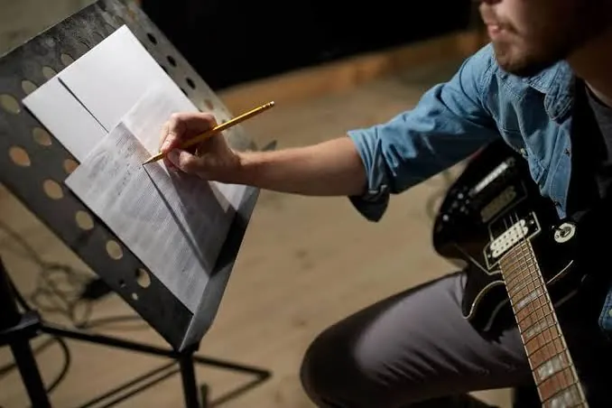

Exploring Music in Context
The academic side of the portfolio: go wide, be diverse, and show you understand a style before you touch it.
- Explain what "exploring" asks of you, and how it differs from experimenting
- Use the when/where, what, how/why framework for musical analysis
- Say exactly what goes in each of the three uploads
- Self assess draft work against criteria A, B1, B2, C1, and C2
Leads into: Experimenting with Music
Runs alongside: Presenting Music
Assessed: Externally, IB examined
Jump to:
What is exploring, really?
Exploring is aural, kinaesthetic, and scholarly research. You listen critically, read scores, and investigate how music is made and performed in contexts you didn't grow up with, then show what you found through short, honest practical exercises, not polished performances.
Where experimenting is about pushing an idea through cycles of trial and revision, exploring is about breadth and understanding: naming what you hear accurately, locating it precisely in a score or recording, and explaining why it matters. It's the academic half of your portfolio, the scholar's role, done well.
Key terms to know
Musical analysis in this component runs on three questions:
When and where?
The contextual background: era, culture, the world the piece came from.
What?
Deconstructing the music itself: structure, instruments, elements, compositional devices.
How and why?
The musical choices and the intentions behind them: what was this trying to achieve?
The three roles
All three roles are present, but the balance leans toward researcher. Tap a role to see what it looks like in practice.

Locating findings precisely: bars, beats, and instruments in the score, minutes and seconds in the recording.
Researcher
You investigate the origins and conventions of music you didn't grow up with, then analyse it closely enough to explain how it's built and why.
- Analysing scores and recordings to extract musical findings
- Researching the social, cultural, and political context around the music
- Naming what you find with accurate terminology, precisely located
- The written exploration in your portfolio
- Explanations of musical and extra musical findings
- Criteria A, B1, and B2

Sketching and building your creative work with whatever tools suit the style: a DAW, a loop pedal, a MIDI keyboard, or manuscript paper.
Creator
You engage with creating conventions practically: arranging, improvising, or notating according to the specific style you're studying. These are technical sketches, not finished works.
- Demonstrating understanding of a style's creating conventions
- Notating in whichever form suits the style; staff notation isn't required
- Keeping the exercise small: sketches, not polished compositions
- One creating exercise (max 32 bars / 1 minute of audio)
- The written statement explaining what it demonstrates
- Criteria B2 and C1
Adapting music from a local or global context onto your own instrument: this is exploration, not authentic reproduction.
Performer
You adapt and play music from an unfamiliar context on your own instrument, voice, or medium, not to reproduce it perfectly, but to genuinely understand its performing conventions from the inside.
- Adapting stimulus music from a local or global context
- Playing it on your own instrument, voice, or medium
- Reflecting on what the adaptation revealed and where it was difficult
- One performed adaptation (max 2 minutes)
- The written statement explaining what it demonstrates
- Criteria B2 and C2
Choosing your material
Same four areas of inquiry and three contexts as the rest of the course. What's different here is how many you need to touch, and how evenly.
Areas of inquiry
Four lenses for how music functions in the world. Your submission draws on at least two of these.
Contexts of music
Three lenses for how familiar the material already is to you.
What you submit
Three uploads this time, each with a fixed internal order.
Written work
- 1Exploration of diverse musical material
- 2Creating statement: implications on the exercise
- 3Performing statement: implications on the adaptation
- 4Bibliography: not included in the word count
Also excluded: images/diagrams/scores (max 5 pages), track lists, and citations.
 Upload 2
Upload 2
Audio evidence
- 1Creating exercise: max 1 minute
- 2Stimulus for the performed adaptation: max 1 minute
- 3Performed adaptation: max 2 minutes
One single audio file, compiled in that exact order.
Audio reference material
- 1Excerpts of the music you analysed and discussed
Order matches the order pieces are discussed in your written exploration. Trim longer works to only the sections you actually address.
How it's marked
Five criteria, 24 marks total. Same criteria at SL and HL. Tap a criterion to see the mark bands.
Criterion A: Selection of evidence
Judges the diversity, breadth, and balance of what you chose to put in the portfolio, not just whether it's varied, but whether the areas of inquiry and contexts are treated equally.
Ask yourself: is my evidence genuinely diverse, or does it lean heavily on one area while barely touching another?
Doesn't refer to diverse material; evidence is rudimentary.
Refers to diverse material, but the balance is inconsistent.
Diverse material, relevant evidence, purposefully balanced.
Criterion B1: Conducting musical research
Judges how well you extract, locate, and explain musical and extra musical findings, and whether your terminology is accurate.
Ask yourself: am I explaining my findings, or just listing them? Can someone find exactly what I'm pointing to in the score or recording?
Findings are superficial; terminology and location are inaccurate.
Reasonable findings; terminology and location are inconsistent.
Purposeful findings; accurate terminology and precise location throughout.
Criterion B2: Implications
Judges whether you understand what your research actually means for your creating and performing, not just that you did research, but that it shaped what you made.
Ask yourself: could I point to a specific decision in my exercise and trace it back to something I found?
States the implications without much depth.
Reasonable account of the implications.
Clear, convincing account of how research shaped the work.
Criterion C1: Understanding creating conventions
Judges how well your creating exercise actually realizes the stylistic, technical, and musical demands of the style you explored.
Ask yourself: does my exercise sound and look like it belongs to this style, or just gesture toward it?
A rough gesture toward the style's conventions.
Shows the conventions, with some inconsistency.
Genuinely realizes the style's creating conventions.
Criterion C2: Understanding performing practices
Judges how well your performed adaptation captures the performing practices of the style you explored, on your own instrument or voice.
Ask yourself: would someone familiar with this style recognise its performing conventions in my adaptation?
A rough attempt at the style's performing practices.
Carries the performing practices across, somewhat unevenly.
Genuinely shapes the performance around the style's practices.
Before you submit
Distilled from the assessment guidance: the habits that separate a strong submission from a rushed one.

- Keep your evidence balanced: equal treatment across the areas of inquiry and contexts you choose, not three examples from one and a token nod to another.
- Choose your creating exercise and performed adaptation from two different areas of inquiry.
- Locate every finding precisely: bars/beats/instruments for scores, minutes and seconds for audio.
- Keep exercises as your own, unassisted work: reworking teacher fed material after feedback isn't submittable.
- If you used any loops in your creating exercise or performed adaptation, make sure every one is self-invented: your own recording, performance, improvisation, or your own MIDI entry. No pre-existing or commercial loops in their original form.
- When adapting for your own instrument, consider choosing music written for a different instrument or voice: it's often easier to demonstrate real understanding that way.
- Check your three uploads are packaged in the exact required order before you submit.